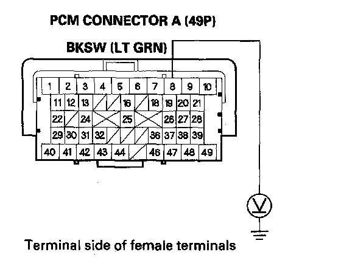

DTC 66
DTC 66: VSA Pressure Sensor (Software)1. Turn the ignition switch ON (II).
2. Check for DTCs with the HDS.
Is DTC 91 or 92 indicated with DTC 66 at the same time?
YES-Do the DTC 91 or 92 troubleshooting.
NO-Go to step 3.
3. Turn the ignition switch OFF.
4. Disconnect the brake pedal position switch 4P connector.
5. Do the brake pedal position switch test.
Is the switch OK?
YES-Go to step 6.
NO-Replace the brake pedal position switch.
6. Short the SCS line with the HDS.
7. Disconnect the PCM connector A (49P).
8. Turn the ignition switch ON (II).
9. Measure the voltage between PCM connector A (49P) terminal No. 8 and body ground.

Is there 0.1 V or more when the brake pedal is released?
YES-Repair short to power in the wire between the brake pedal position switch and the PCM.
NO- Go to step 10.
10. Turn the ignition switch OFF.
11. Substitute a known-good PCM.
12. Turn the ignition switch ON (II).
13. Clear the DTC with the HDS.
14. Test-drive the vehicle at 8 mph (12 km/h) for 60 seconds or more.
15. Check for DTCs with the HDS.
Is DTC 66 indicated?
YES-Check for loose terminals in the VSA modulator-control unit 46P connector. Check for a loose connection at G303. If necessary, substitute a known-good VSA modulator-control unit, and retest.
NO-Replace the original PCM.